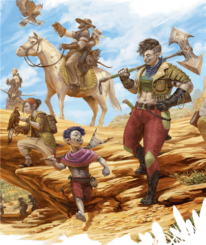

Les orcs rattachent leur création à Gruumsh, un dieu puissant qui parcourait les grands espaces du Plan Matériel. Il a doté ses enfants de dons pour traverser plaines immenses, cavernes sans fin et mers agitées, et pour affronter les monstres qui s'y cachent.
Même lorsqu'ils vénèrent d'autres dieux, les orcs conservent ces dons de Gruumsh: endurance, détermination et vision dans l'obscurité. Ils sont en moyenne grands et massifs, avec une peau grise, des oreilles pointues et des canines inférieures marquées rappelant de petites défenses. Sur certains mondes, les jeunes orcs grandissent avec les récits des voyages et des épreuves de leurs ancêtres; certains veulent égaler ces exploits, d'autres préfèrent tracer leur propre voie.